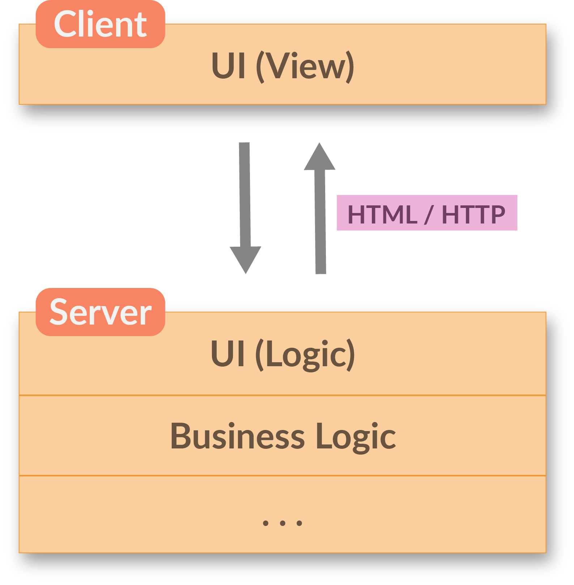
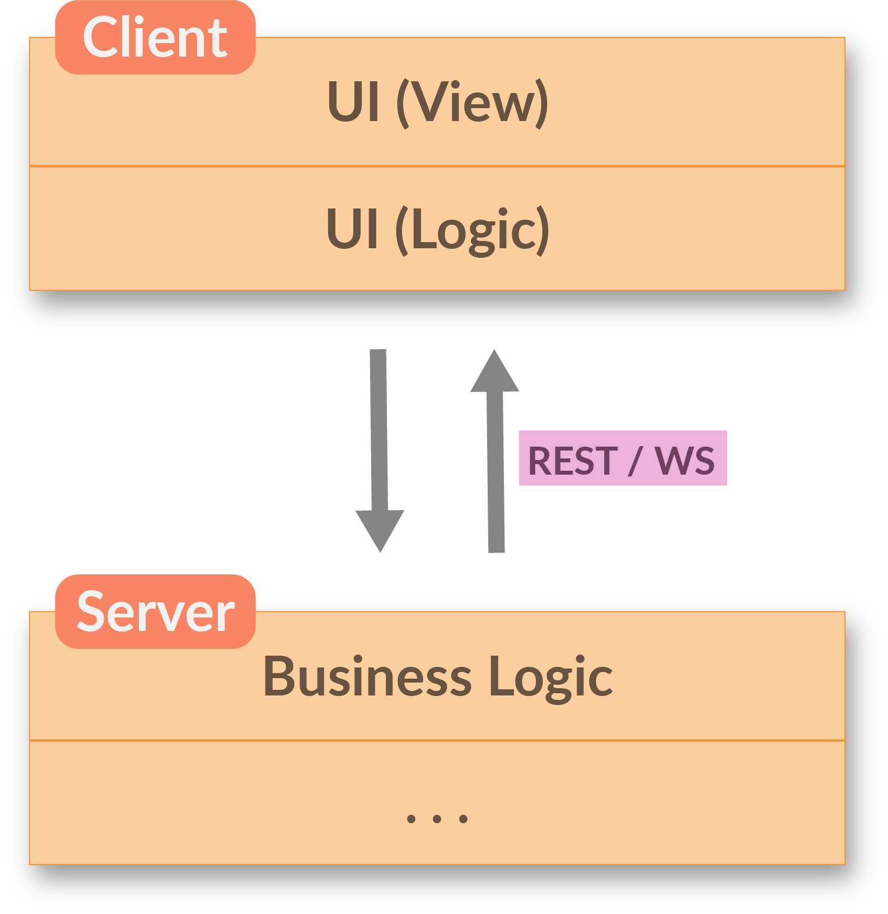
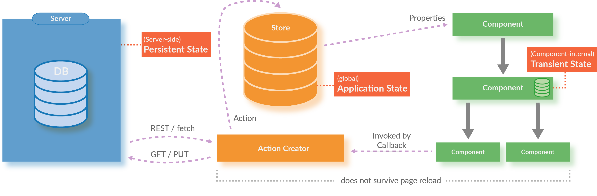

Overview of current (JavaScript) frontend architectures
Nils Hartmann / @nilshartmann
Oliver Zeigermann / @DJCordhose
Central challenge with a complex Web Application
best ui/ux opposes requirement for maintainability
What makes Frontend Architecture so hard?
The "problem" sits in front of the keyboard!
- everything should be consistent
- consistent layout (UI)
- consistent behavior and interaction (UX)
- consistent display of all data in all components
- responsive UI even under load
- everything should load without delay
The Flipside
Maintainability
Of course™ the application shall also be
- fast and cheap to develop
- maintainable for decades
- developed in autonomous teams
- developed having a consistent architecture
- matched with skill set of existing developers
In the beginning...
Classic Web Apps
Classic Web Applications
- Browser sends HTTP Request
- Content is rendered on the Server
- HTML is sent back to the Browser
- Browser only shows the page to the user
- Each interaction repeats this round-trip
Classic Web Apps
Many times an obvious approach...
In enterprise projects, Classic Web Apps are often the "natural" beginning:
- Java/C# is the language of choice in the backend anyway
- Java/C# and HTTP/HTML are very well known and understood
- UI improvements (like simple validations, animations) can be implemented on the client with JavaScript snippets (jQuery)
- in many cases this might be sufficient
Classic Web Apps
...but: UI/UX capabilities are limited
- Even Classic Web Apps often contain "SPA-like" parts
(for example when using JSF components) - Mixing client- and server-side rendering leads to confusing architecture and programming model
- Real costs of this "mixed" approach getting visible during development (when it's too late...)
Classic Web Apps
Limitations? An Example...
And our example is not even that complex... 🤔
Next Step
Single-Page Applications
Single-Page Applications
The app runs completely in the browser
- only one (single) HTML page that mainly loads JavaScript and CSS
- runs without significant server part for the UI
- server only receives and sends data (JSON/REST API)
- could even work offline
- can have same UI/UX experience as a desktop app
Single-Page Applications
Components with Templates
A SPA is composed of (business) components:
- Templates describe the UI of the component
- But now:
- Logic is part of the component
- Logic is a "first-class" citizen and no longer a "loose" snippet (like in jQuery)
- Logic is fully executed on the client
- Prominent Frameworks: React, Angular and Vue
Architecture Pattern
Smart and Dumb Components*
*also known as Mediator Pattern with Web Components / Polymer
Smart Components
- Managing (part of) the application state
- Contain UI logic
- Pass parts of the state as immutable data to subcomponents
- Pass callbacks to subcomponents for interaction
- Mostly domain-specific, not intended to be reusable
Dumb Components
- only for presentation, no logic
- but might contain own ("transient") state
- have no knowledge or dependencies to their surrounding components
- children of Dumb Components are usually other Dumb Components (but there are exceptions)
- reusable

Next Step
Redux as an Architecture Pattern
Redux
- Central state management: one store for whole app, like a database
- External state management: extract logic from the (UI-)components
Redux is independent of UI framework
Bindings exist for popular UI frameworks
- React: http://redux.js.org/docs/basics/UsageWithReact.html
- Angular: https://github.com/ngrx/store
- Vue: https://github.com/vuejs/vuex / https://github.com/revue/revue
- Web Components (Polymer): Redux is recommended implementation of Global Mediator Pattern, https://twitter.com/DJCordhose/status/899943415353311232 https://tur-nr.github.io/polymer-redux/
Redux extracts responsibility out of the UI framework

Redux Pattern
Resulting Architecture

Code Sample: Reducer
Just a function, thus independent of UI Framework
type Greeting = {
greeting: string;
name: string;
}
type AddGreetingAction = {
type: 'ADD_GREETING',
greeting: Greeting
}
function greetingsReducer(state: Greeting[] = [], action: AddGreetingAction) {
switch (action.type) {
case 'ADD_GREETING':
// immutable operation, creating new state
return [...state, action.greeting];
default:
return state;
}
}
The only part that is allowed to update state
Different Types of State
Code Sample: Action Creator
Again, just a function independent of UI Framework
async function loadGreetings(dispatch) {
try {
const response = await fetch(BACKEND_URL);
const json = await response.json();
dispatch({
type: SET_GREETINGS,
greetings: json
});
} catch (err) {
console.error('LOADING GREETINGS FAILED:', err)
}
}
The only place where asynchronous operations are allowed
Wrap Up Redux
A UI pattern for User Interfaces
- Mainstream solution
- Independent of framework
- Easy testing of business logic as logic is implemented only in pure functions ("Reducer")
- Great debugging because of dev tools
- Works great in large applications with many dependencies between parts / components
Single-Page Apps
Limitations
- SEO
- First-Page-Impressions
- Previewing content, for example:
- Preview in search result lists
- Sharing of links in social media apps
Single-Page Apps
First-Page-Impression
Even for a simple Application it can take a while to load and bootstrap until the app is responsive
What comes from Server is an empty page
Next Step
Universal Web Apps
Universal Rendering
- First-Page-Impression is rendered on the server
- Not only the markup but also the state is returned from the server
- (following pages can be rendered on server as well)
- Links have to be "real" HTML links (no click handlers)
- Runs without JavaScript on the client (at least partial) after rendered
- Code shared almost 100% between client and server
- Supported by React, Angular and Vue
Universal Rendering: First-Page-Impression

Universal Web Apps
Challenges
- Complete state must be available on the server
- Need to wait until all async code has been processed!
- If returned page is invalid: flickering due to re-rendering on the client
- Different locales on server and client
- (Rapidly) changing data (timestamps, market rates)
- The server must run JavaScript (typically it will be Node.js)
- How to do with Web Components? (headless chrome?)
- Only helps with "Time to first Meaningful Paint", not with "Time to Interactive"
Who uses modern SPAs?
Is someone really doing this?
- Twitter Mobile Client: React with Redux
- Facebook: React
- Spotify Web Player: React with Redux
- New York Times: React
- JavaZone: React with Redux
The Doctor is In
| UI / UX | Myths | Architecture | |
|---|---|---|---|
| 20 | Can I use links in SPAs? And the back button? | Isn't the life time of a JavaScript Frontend Framework measured in weeks? | Why should I use frontend logic in the first place? |
| 40 | Should I write every SPA as a Universal Application? | Can I refactor and analyze JavaScript code? | Isn't all my investment lost if I have to change the UI framework? |
| 60 | Choose your question | Choose your question | Choose your question |
| 80 | When should I use a classic Web Application rather than an SPA? | Can I reuse JavaScript Code? | Why is there no established layer model in SPAs? |
| 100 | Why care about server roundtrips, isn't the internet fast enough by now? | Isn't JavaScript unmaintainable anyway? | How does all this work with Microservices? |
Nils Hartmann / @nilshartmann
Oliver Zeigermann / @DJCordhose
http://bit.ly/ui-architecture-javazone